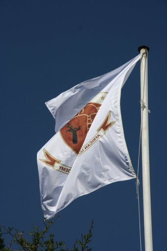
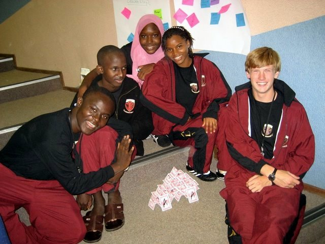
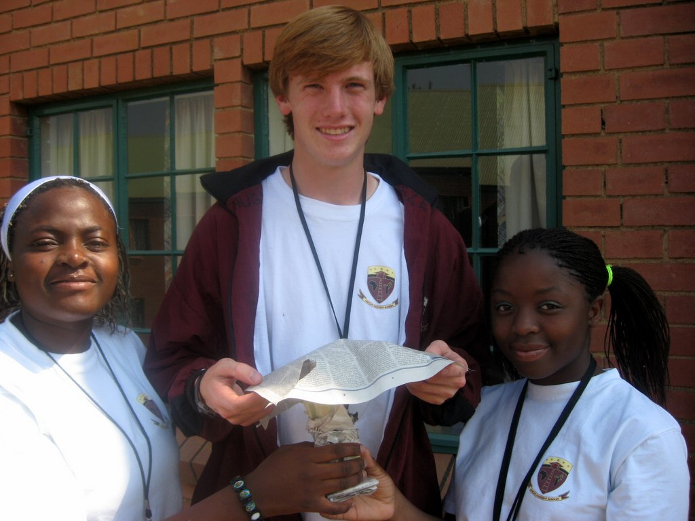
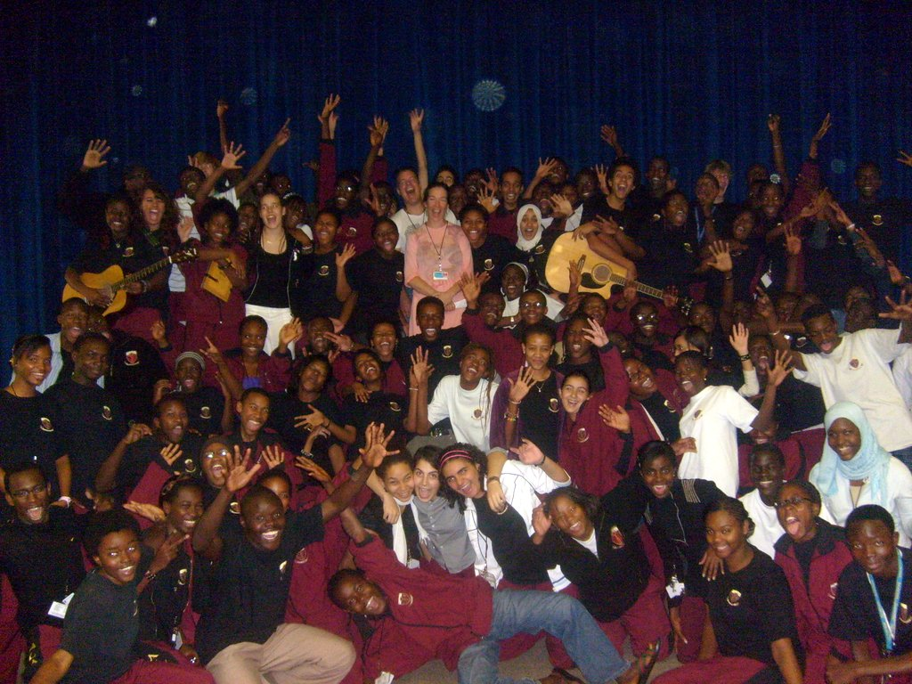
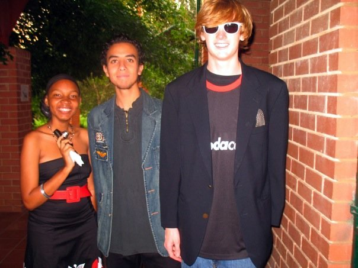
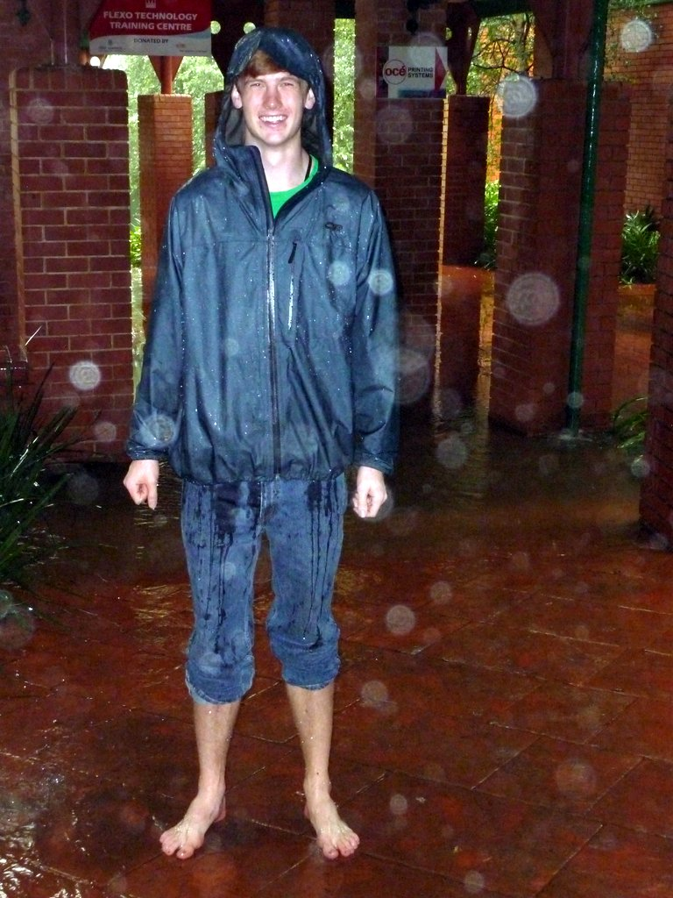
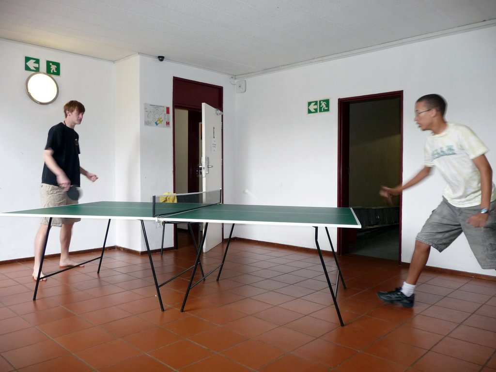

Rereading these emails has been a fairly mortifying experience. I was 18, hardly done with being the student body president of my high school, an accomplished and confident student, and (for the first time in my life), a big fish. My problem was that I didn't realize how small my pond had been, and ultimately how meaningless it is to be a big fish anyway.

I was arrogant. You can see it in my writing - look at the confident, snappy sentences, look at the quick, easy conclusions, the complete lack of awareness of the privilege I brought to every interaction, and the wry know-it-all tone. I'm pretending to be the butt of all the jokes, but I'm just a hair too aware of the joke to be convincing.

Like most arrogant people, I was also hopelessly naive. I thought I knew it all, but in fact I knew very little of it. I was hopelessly idealistic - read my post on Obama, or listen to the speech on YouTube. This was most apparent, however, when it came to girls - with one big relationship under my belt, I thought I knew how all relationships worked. I followed a strict script, and when things went awry, I couldn't imagine what had gone wrong. Really, what had gone wrong was that I thought every relationship would feel exactly the same as the senior year version, and in trying to push them into that mold, I held my girlfriends to an invisible code, trying to shape them and push them into the way I thought they ought to be. Of course, this just caused everyone a lot of pain, but I wouldn't realize what I was doing until well after my freshman year of college.

ALA humbled me, but not perhaps as much as it should have. I learned that my opinions - on social issues, on politics, on everything - weren't as universally accepted as I thought. I also learned that, however convinced I might be that liberal values are right and universally so, others don't share my perspective, and it's not so easy to convince them. Perhaps, I realized at ALA, it wasn't so obvious what was right and wrong - perhaps the world was a bit more complicated. I also learned a few techniques for getting along with others outside my little prep school bubble - ask a lot of questions, don't assume, and have a little knowledge to start with.

But there was so much I failed to learn at ALA. I left the school even more convinced of my exceptionality than when I went in. It wouldn't be until Carolina that I would realize that I'm no one special - that everyone is no one special - and that it's ok to lead a small life, making marginal improvements to the world around me. That is a meaningful, satisfying life - a life where meaning comes from within, rather than from external reinforcement. I still struggle with this - I sometimes have fantasies about being president (in my mind, the whole job is giving rapturously received speeches), but I know now it will never happen, and I'm glad that it won't.

I've lost touch with all of my friends from ALA. I feel guilty about it, but less now than I once did. It's difficult to stay in touch with friends, and almost inevitable. I hope, someday, that I will connect with a few of them - Lennon, Spencer, Mehdi, Felix, OY, Mainza and Cynthia are certainly at the top of the list. Perhaps they will read this. I hope it's not too offensive to them.

Anyway, as I sit here in Maine, the memories from that little green and red campus come flooding back to me. I remember the rooms, the bright hallways, the damp bathrooms, the secret places where I would go to have a little solitude, the library (if you could call it that), the trees that defined the end zones of the frisbee field, and the trees right in the middle of the field. I loved my time in South Africa - the difficulties were almost nothing compared to the moments of joy - and I miss that feeling of confidence. But, ultimately, I'm glad it's gone, and I'm thankful for ALA's role in teaching me who I am.
